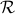
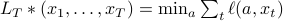

Introduction to Minimax regret
I often get question about the meaning of minimax regret and how to calculate it, so here is a short introduction.
Online learning describes the world as a repeated game; for each round , the learner plays an action , then nature plays a response (perhaps even adversarially chosen given the player's action), and the player witnesses and incurs the loss . How can we measure the preformance of the player? Very simple strategies of nature can insure linearly growing expected cumulative loss; even choosing i.i.d from some distribution is sufficient. Instead, we try to control regret, , which is the difference between her cumulative loss and the cumulative loss of the best action in some comparison class. That is,
where .
Early work with a finite comparison class of size  and arbitrary bounded loss function described algorithms that have regret upper bounds of with lower bounds that show that any algorithm can be made to suffer regret of the same order (e.g. weighted majority and many others).
and arbitrary bounded loss function described algorithms that have regret upper bounds of with lower bounds that show that any algorithm can be made to suffer regret of the same order (e.g. weighted majority and many others).
There is a stronger notion of optimality where we guarantee achieving the best possible regret aganist all response sequence. For a single round game, the adversary can pick ; therefore, the player should chose to minimize this worst-case regret. For two rounds, nature at round  plays assuming that the player will play the minimax response in round , and therefore the player at round 1 minimizes this maximum regret. Extending to
plays assuming that the player will play the minimax response in round , and therefore the player at round 1 minimizes this maximum regret. Extending to  rounds,the value, or minimax regret, is defined as
rounds,the value, or minimax regret, is defined as
Intuitively, this is simultaneously the minimum regret possible by the player and the maximum regret possible by nature. To evaluate the value, it is often convinient to write it out as a backwards induction. First, note that we can write the value as:
where we have just moved terms around. It is then straightforward to check that recursively definite the value-to-go with base case

and induction step
will give the value for the base case of . One can think of the value-to-go  as essentially the regret if responses of were played in the first
as essentially the regret if responses of were played in the first  rounds, then both players played optimally from then on. The reason that the optimal actions depends on the past is because depends on them. We need to account for the difficulty in the comparator when playing actions this round, as always choosing hard actions (to make large) may make large and therefore regret small
rounds, then both players played optimally from then on. The reason that the optimal actions depends on the past is because depends on them. We need to account for the difficulty in the comparator when playing actions this round, as always choosing hard actions (to make large) may make large and therefore regret small